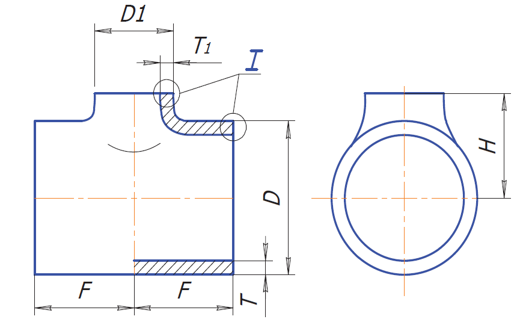

<h3>Площадь поверхности тройника</h3>

<form>
    <label>Диаметр тройника (D), мм</label>
    <input class="w3-input w3-border" type="number" ng-model="diam" placeholder="диаметр">
    <label>Диаметр отвода (D1), мм</label>
    <input class="w3-input w3-border" type="number" ng-model="diam2" placeholder="диаметр2">
    <label>Длина тройника (F * 2), мм</label>
    <input class="w3-input w3-border" type="number" ng-model="dlina" placeholder="длина">
    <label>Высота тройника (H), мм</label>
    <input class="w3-input w3-border" type="number" ng-model="visota" placeholder="высота">
    <label>Точность вывода результатов (знаки после запятой)</label>
    <input class="w3-input w3-border" type="number" ng-model="tochnost" placeholder="точность">
</form>

<br>

<table class="w3-table w3-bordered w3-striped">
  <tr>
    <td>Площадь поверхности тройника, м2</td>
    <td>{{ Ss }}</td>
  </tr>
</table>
